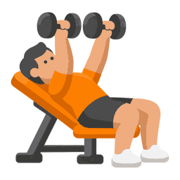

Chest · Dumbbells, Adjustable bench
How to do an incline dumbbell press
The incline dumbbell press mainly works your chest and front shoulders, with help from your triceps. Set a sturdy bench to a slight incline, about 30 degrees. When you finish, bring the dumbbells to your thighs and sit up.
Step by step
- Set a sturdy bench to a slight incline, about 30 degrees.
- Sit on it with a dumbbell on each thigh, then lie back with your head resting on the bench.
- Bring the dumbbells to the sides of your upper chest, with your shoulder blades pulled back and down.
- Press the dumbbells up until your arms are straight above your shoulders.
- Lower them slowly back to the sides of your upper chest, with your elbows angled back about 45 degrees.
- When you finish, bring the dumbbells to your thighs and sit up.
Form tips
- Start with a light first set, and add weight only when the press feels steady.
- Keep the slope low, since a steep bench shifts the work to your shoulders.
- If you have no adjustable bench, use a Dumbbell Bench Press instead.
Muscles worked
- Chest main
- The broad muscle across the front of your ribcage. It pushes your arms forward and in.
- Front shoulders main
- The front of your shoulder cap. It lifts your arm forward and helps in every press.
- Triceps
- The muscle on the back of your upper arm. It straightens your elbow.
Equipment
You need dumbbells and adjustable bench.
Plans with this exercise
Full Body Basics, Dumbbell Only, Upper Body Builder, Push Pull Legs, Upper Lower
More chest exercises


General guidance, not medical advice. Stop if something hurts, and ask a professional if you have an injury or a health condition.